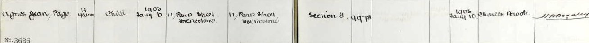

Agnes Jean Page cAug 1898 - 1903
[ Home ] | [ Calendar ] | [ Surnames Index ] | [ Family History ]The child of Frederick Page (a bricklayer) and Margaret Else (a charwoman)Agnes Page, the third cousin once-removed on the father's side of Nigel Horne, was born in Folkestone, Kent, England c. Aug 18981,2,3,4 and baptized there on Aug 7, 1898. On Mar 31, 1901, she lived at 11 Park Street in Folkestone1 which is where she died on Jan 6, 19033,4. She was buried at St John's Church, St John's Church Road, Folkestone on Jan 10, 19034.
Parents
- Frederick Stephen was born c. Nov 1863
- Margaret Ann was born c. 1866
Citations
- 1901 England, Wales & Scotland Census - Findmypast (was age 2 and the daughter of the head of the household)
- England & Wales births 1837-2006 - Findmypast
- England & Wales deaths 1837-2007 - Findmypast
- Kent Burials - Findmypast
Media
Agnes Jean Page - burial register

England & Wales births 1837-2006 - BMD/B/1898/3/AZ/000448/285
England & Wales deaths 1837-2007 - BMD/D/1903/1/AZ/000277/204
Kent Burials - GBPRS/CANT/D/95470690
Family Tree

Generated by ged2site. Last updated on Nov 13, 2024